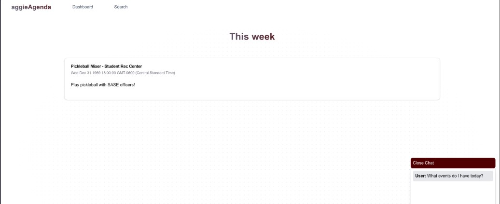
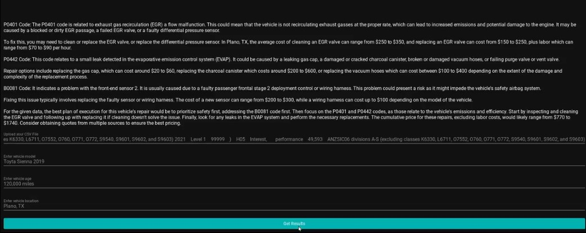
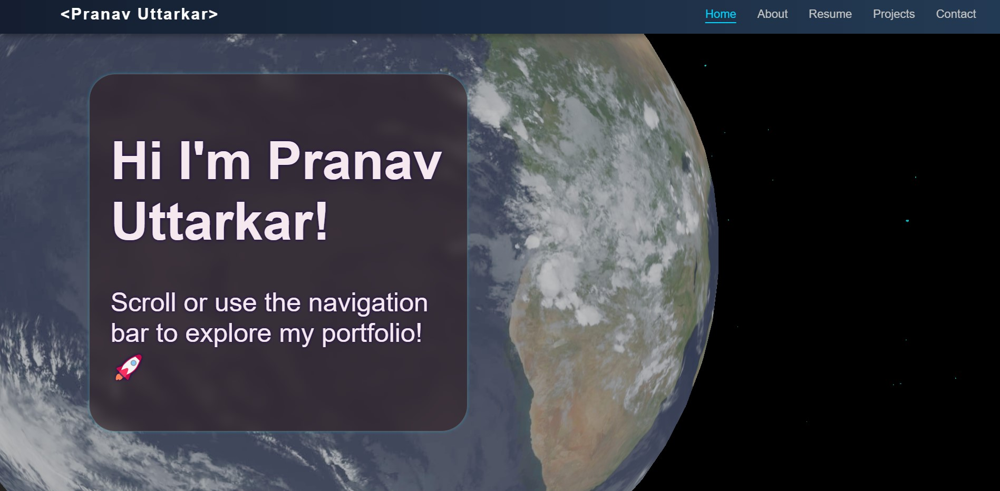

Leading a team of 7 students to develop a dynamic web app, "A&M
Studys," facilitating academic Q&A for Texas A&M courses.
Teaching and utilizing React.js for app front-end and Firebase for
back-end data management, creating a responsive, user-centered
interface.
Conducting weekly team meetings to address challenges and align on
project goals, ensuring timely delivery of development milestones.
Organizing project workflows using Jira and GitHub, streamlining
task assignments and tracking to increase productivity.
React
Firebase
TypeScript
Jira
Aggie Agenda - HowdyHack 2024

Built Aggie Agenda in 24 hours during a hackathon, collaborating
with a partner to streamline event management for Texas A&M
students by centralizing campus organization events into a single,
accessible interface.
Developed the Frontend using Next.js and styled it with Tailwind
CSS, ensuring a responsive and user-friendly experience across
devices.
Overcame authentication and event synchronization challenges under
time constraints, enhancing technical skills and problem-solving
abilities throughout the project.
Next.js
Tailwind CSS
CarClinic AI

Python libraries such as
Pandas, NumPy, and Scikit-learn ML library to efficiently data classification
to analyze diagnostic data collected from OBD scanner.
Designed a Python-based app that analyzes vehicle OBD-II codes
along with user-provided vehicle details to provide actionable
repair suggestions through the GPT-4 API.
Engineered the hardware for an ELM327 OBD scanner board, designing
the physical housing with AutoCAD Inventor and 3D printing it with
durable PLA+ material which withstood automotive workshop
conditions.
Python
API
Scikit-Learn ML
AutoCAD Inventor
ThreeJS Portfolio

Utilized Three.js to create interactive 3D visualizations, gaining hands-on experience with WebGL concepts and rendering techniques.
Conducted performance profiling and debugging using tools like Spector.js and browser DevTools to identify bottlenecks, reduce draw calls, and improve frame rates
Experimented with lighting, camera controls, and custom shaders in Three.js to enhance the realism and interactivity of 3D scenes.